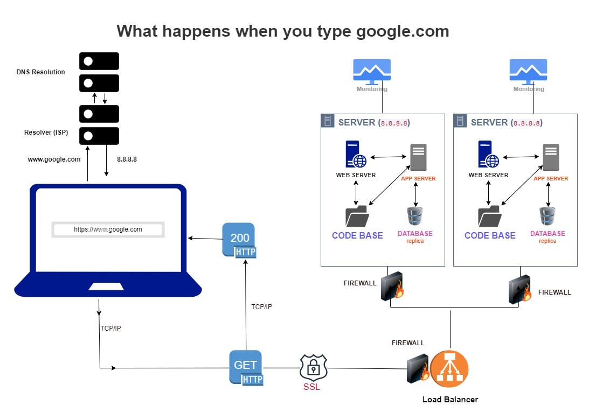

What Happens When You Type www.google.com on your browser and click enter

Introduction
Google has become a ubiquitous part of our lives. It's the go-to search engine for most of us, and it's rare to find someone who hasn't typed "google.com" into their browser's address bar. But have you ever wondered what happens behind the scenes when you hit that "Enter" key?
The first thing to understand is that "google.com" is just a domain name, which is a human-readable way of referring to a specific server on the internet. Domain name is like your house address on a paper which can direct anyone with it to your house location. When you type "google.com" into your browser and hit Enter, your computer needs to translate that domain name into an IP address, which is a unique numerical identifier for the server that hosts the Google website.
To do this, your browser sends a request to a Domain Name System (DNS) server, which is like a phone book for the internet. The DNS server looks up the IP address associated with "google.com" and sends it back to your browser. Once your browser has the IP address, it can connect to the Google server and request the webpage you're looking for.
When your browser connects to the Google server, it sends a Hypertext Transfer Protocol (HTTP) request. This request tells the server what page you want to see and any additional information, such as your browser type and language preferences. The Google server processes your request and sends back an HTTP response, which contains the webpage you requested.
So there you have it - a brief overview of what happens when you type "google.com" into your browser and hit Enter. It's a complex process involving multiple servers, protocols, and technologies, but it all happens in a matter of seconds, thanks to the incredible speed and efficiency of modern web technologies.
This whole process involves several components, including DNS, TCP/IP, firewalls, HTTPS/SSL, load-balancers, web servers, application servers, and databases.
Let's take a closer look at each of these components and how they work together to deliver the Google homepage to your browser
omain Name System (DNS) Resolution
As earlier stated, the first step in the process is to translate the domain name "google.com" into an IP address that your computer can use to connect to the Google server. This is called DNS resolution, and it involves a series of steps.
When you type "google.com" into your browser and hit Enter, your browser first checks its own cache to see if it has already looked up the IP address for that domain name recently. If it has, it can skip the rest of the DNS resolution process and use the cached IP address to connect to the server.
If the IP address isn't in the cache, your browser sends a DNS query to your local DNS resolver, which is typically provided by your Internet Service Provider (ISP). The DNS resolver checks its own cache to see if it has the IP address for "google.com". If it does, it sends it back to your browser, which can then connect to the server using that IP address.
If the IP address isn't in the local resolver's cache, it sends a recursive query to the root DNS servers. These are the servers at the top of the DNS hierarchy, and they maintain information about the DNS servers responsible for each top-level domain (such as ".com", ".org", etc.).
The root DNS server responds to the query with a referral to the DNS server responsible for the ".com" top-level domain. Your local resolver then sends another query to that server, which responds with a referral to the DNS server responsible for "google.com".
Finally, your local resolver sends a query to the "google.com" DNS server, which responds with the IP address for the Google server that hosts the "google.com" website. This IP address is sent back to your browser, which can then connect to the server.
Establishing a TCP Connection
Now that your browser has the IP address for the Google server, it needs to establish a TCP connection to that server. TCP (Transmission Control Protocol) is a protocol that provides reliable, ordered, and error-checked delivery of data between applications running on different hosts.
To establish a TCP connection, your browser sends a TCP SYN (synchronize) packet to the Google server's IP address. This packet includes information about the initial sequence number, window size, and other parameters that both ends of the connection will use to communicate.
The Google server responds with a TCP SYN-ACK (synchronize-acknowledge) packet, which acknowledges receipt of the initial SYN packet and includes its own initial sequence number and window size. Your browser then sends a final TCP ACK (acknowledge) packet to confirm that the connection has been established.
Fire Wall
A firewall is a security system that monitors and controls incoming and outgoing network traffic based on predetermined security rules. Its primary purpose is to protect a network from external threats, such as hackers and malware.
When you type a URL (Uniform Resource Locator) like "google.com" into your browser, the request that your browser makes to Google's server passes through the firewall on its way. The firewall checks the incoming request to make sure it is allowed based on its security rules.
There are two main types of security rules that a firewall uses to check incoming requests:
1. Rules that allow or block traffic based on the source and destination of the request. For example, a firewall may be configured to block all traffic from certain countries or to allow only certain IP addresses to access the network.
2. Rules that allow or block traffic based on the type of traffic. For example, a firewall may be configured to block all traffic on certain ports (such as those used by malware) or to allow only certain types of traffic (such as HTTP or HTTPS).
If the incoming request meets the security rules set by the firewall in front of Google's server, it is allowed through, and the browser is able to access the website.
However, if the request does not meet the security rules, it is blocked, and the browser is unable to access the website.
HTTPS/SSL
HTTPS (Hypertext Transfer Protocol Secure) is a secure version of the HTTP protocol used to transmit data on the internet. It is used to encrypt the data transmitted between your browser and Google's server.
SSL (Secure Sockets Layer) and TLS (Transport Layer Security) are encryption protocols that are used to secure the data transmitted over HTTPS.
When your browser establishes a connection with Google's server using HTTPS, your browser and Google's server first agree on the version of SSL/TLS to use and then create a secure, encrypted channel for transmitting the data.
Let me use an analogy to explain what is going on here.
HTTPS is like a password locked box that is used to send messages over the internet. When you want to send a message using HTTPS, you put the message in a password locked box and send it to the person you want to receive the message. Only the person you are sending the message to has the password to unlock the box and read the message.
SSL/TLS are like special password that is used to lock and unlock the box. When you want to send a message using HTTPS, you and the person you are sending the message to agree on the password to use to lock and unlock the box. This way, only you and the person you are sending the message to know the password and can read the message.
When you type "google.com" into your browser, the browser is like the person sending the message. The server that hosts google.com is like the person receiving the message. The browser sends a request for the webpage using HTTPS, which is like putting the request in the locked box and sending it to the server. The server then sends the webpage back to the browser using HTTPS, which is like putting the webpage in the locked box and sending it back to the browser.
Load-balancer
A load balancer is a device that distributes incoming network traffic across a group of servers or resources.
Its primary function is to ensure that the traffic is distributed evenly across the servers in order to avoid overloading any single server and to increase the overall capacity and reliability of the system.
A company like Google, which receives billions of website visitors a day, will need a lot of servers to serve all these users. Therefore, there will be a need for them to set up a load balancer to ensure that some of the servers are not overburdened while others are being underutilized.
In the case of a browser trying to access google.com, the load balancer would receive the incoming request from the browser and then forward it to one of the servers in the Google server network. The particular server chosen will depend on the type of load balancing algorithm implemented.
Web server
A web server is a computer program that is responsible for handling requests for web pages from clients (such as a browser trying to access google.com). When a client sends a request for a web page to a web server, the server processes the request and returns the appropriate response to the client.
This means that when trying to access google.com, Google's server will receive a request from the load balancer.
The web server would then process the request and generate a response, which would typically include the HTML, CSS, and JavaScript files that make up the web page.
The web server would then send this response back to the load balancer, which would forward it on to the browser. The browser would then use the HTML, CSS, and JavaScript files to render the web page for the user.
Application server and database (if applicable)
Unlike the web server, the application server handles dynamic content. When using "google.com", the application server will be responsible for generating the search results (which change based on the query you put into the search engine).
When you submit a search query to Google, the request is first sent to the load balancer, which forwards it to one of the web servers in the Google server network. The web server then sends the request to the application server, which processes the request and generates the search results.
Depending on the complexity of the search query, the application server may need to make a request to a database in order to retrieve the necessary data.
For example, if you are searching for a specific product on an e-commerce website, the application server may need to retrieve information about the product from a database.
Once the application server has obtained the necessary data, it sends it back to the web server, which includes it in the response that is sent back to the the browser. The browser then uses this information to display the search results to you.
Rendering the Webpage
Rendering the webpage is the final step in the process. Your browser uses the parsed HTML and CSS code to create a Document Object Model (DOM) that represents the structure of the webpage, and it uses the DOM and the JavaScript code to render the page in the browser window.
The rendering process involves laying out the elements of the page according to their position and size, applying styles and effects, and executing any JavaScript code that manipulates the DOM or modifies the appearance of the page.
Once the page has been fully rendered, you can interact with it using your mouse, keyboard, or other input devices. You can click on links, enter text into search boxes, and perform other actions that trigger additional HTTPS requests and responses, starting the process all over again.
Conclusion
This post is my submission to a task focused on technical writing as part of the ALX Africa Software Engineering program. I hope you enjoyed it and now appreciate exactly what happens when you type "google.com" into your browser.
If you would like to connect with me personally, do send me a DM and I would love to hear from you.
In conclusion, typing "google.com" into your browser and hitting Enter triggers a complex series of processes that involve DNS resolution, TCP connection establishment, HTTPs request and response exchange, dynamic webpage generation, and webpage rendering to deliver the Google homepage to your browser. Each of these components plays a crucial role in ensuring that the website is delivered quickly, securely, and reliably.
Understanding these processes can help you troubleshoot network and performance issues, develop more efficient web applications, and appreciate the complexity of the modern web.